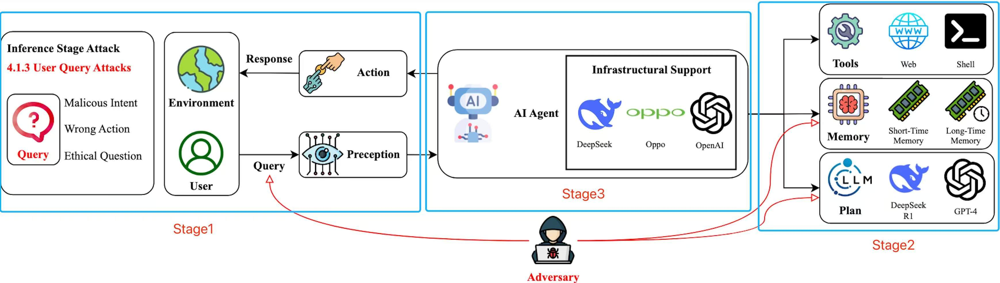

Start by constructing an AI agent using our framework. This step guides you through the process of setting up the foundational architecture, configuring the agent's parameters, and integrating it with various platforms. You'll learn how to configure the agent's behavior, set up communication protocols, and establish secure connections with external services. The framework allows for easy customization based on your specific requirements.

Figure 1. Current AI agent systems suffer from various adversarial attacks and generate harmful or illegal responses.

Figure 2. Major events related to AI agents and its security.

Figure 3. An overview of the proposed secure AI agent system framework.